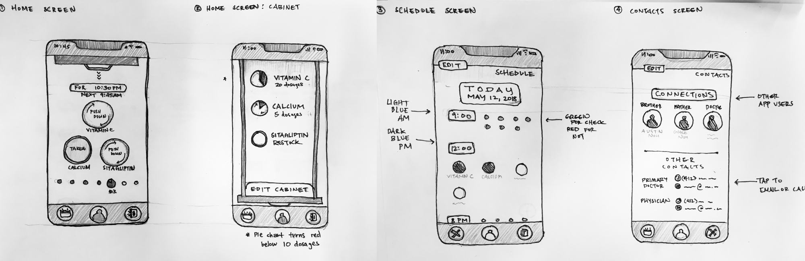
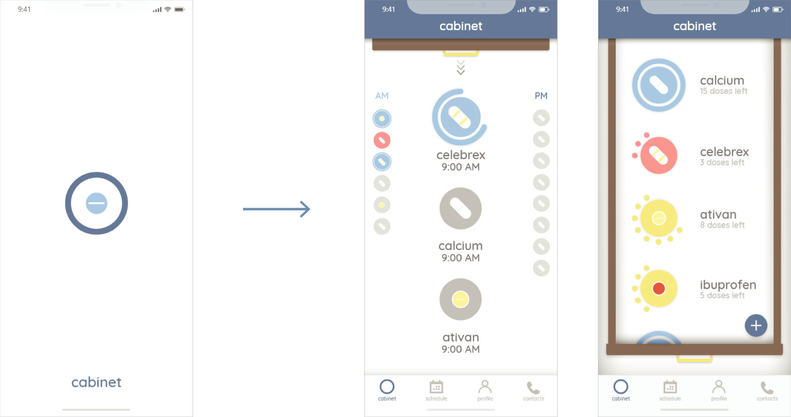
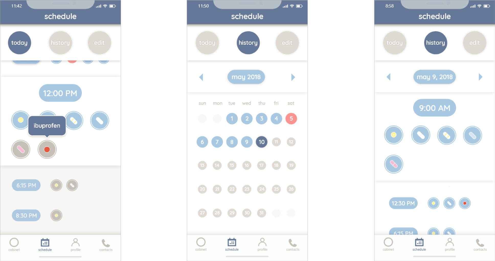
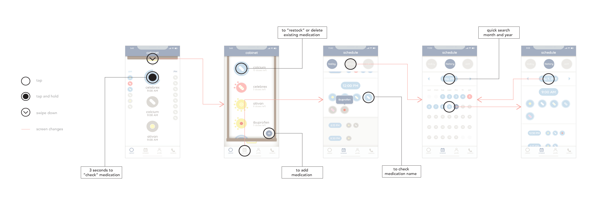
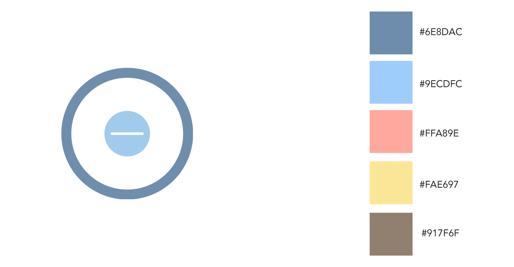

Cabinet
2018
Information Design 51-236
Professor Vicki Crowley
initial research and interviews in collaboration with
Stephanie Truong and Hanna Jang
Cabinet is a mobile interface that allows the user to easily track their or their loved one's medication stock and daily intake. It is directed to anyone who has to take several doses of medication throughout the day. The caregivers who use this application can connect their accounts to their loved ones, whether it be family or friend, to help the caregivers keep themselves updated.
Research
The project first started from a given subject, in this case, a 60 year old taking care of an elderly relative. To be able to create accurate personas of our given age group, we conducted two live interviews. From the interviews, we were able to create journey maps for two personas in completely different situations. With the journey maps, I was able grasp several major pain points seen in this subject which include: organization, medication, emotional connection, and self-care.


Initial Sketches
With the topic of medication, I was able to both tackle the pain points of my given subject as well as cater the app to a broader audience. The initial sketches demonstrate the general scheme for the application I had in mind. This application would allow the user to keep track of their current "medicine cabinet" and also be notified on when to take their medication on a digital interface. The sketches themselves attempt to visualize the application utilizing visual hierarchy and graphic qualities that would be incorporated into the design (i.e. cabinet).

Prototype
The project requirements called for a splash screen, home page, and one other major feature. The following screens are the splash screen, home page, cabinet screen, today's schedule, schedule calendar, and past schedules.



Logo and Color
Initially, I was testing around with sketches of cabinets and pill bottles. However, after various iterations I decided to put off the logo and started designing the interface of the application. When working on the screens, I realized that the reoccurring icon/geometry in my design was the circle. The circle represents both the top view of a pill bottle as well as a sense of completeness which is essential in tracking medication. Inside the pill bottle I put in a circular pill rather than a capsule due to the lean towards a symmetrical and center-aligned design.
The colors seen in the application is fairly muted. I chose these colors because I wanted the interface to be very easy on the eyes and soothing to look at. Specifically, I chose two soft blue tones as the main colors because blue is a calming color. The soft salmon red/pink acts as a cautionary color, as it appears when certain things need attention (missed medication or need to restock). The yellow was a nice middle spot between calm and alarming which would act as a filler or transitioning color. The brown was simply used to replicate the look of a cabinet.
